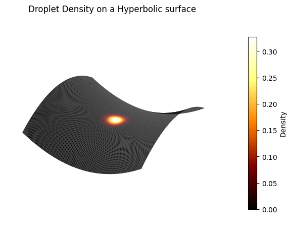
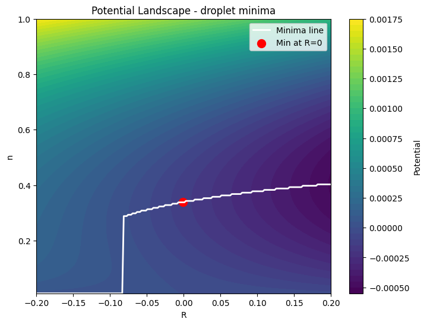

Antonino Flachi — Research Activities
Current Projects

Figure 1: Self-bound quantum liquid droplet formed in a binary mixture of ultra-cold atoms.

Figure 2: Phase diagram of the quantum liquid droplet system.
Quantum Liquid Droplets
I am broadly interested in the interplay between general relativity, geometry, and quantum field theory. The natural framework for studying this connection is quantum field theory in curved spacetime. This remains a highly challenging and largely speculative field, mainly because direct experimental verification of the theory requires observing evaporating black holes other other strongly gravitating sources, which at the moment we don't know how to do. A way around this is to use artificial curved-space analogues to mimic gravitational effects. It is not the same thing, but we hope to learn something from that. Recently, I became particularly interested in using quantum liquids to probe how gravity mimicked by curved space alters quantum phenomena. The system I am currently looking at consists of a very dilute binary mixture of ultra-cold atoms. By carefully tuning the way the atomic species interact it is possible to make quantum effects to stabilize the system leading to the formation of self-bound, spherically symmetric quantum liquid droplets. Such systems are highly sensitive to small changes in the background geometry, making them excellent tools to observe curvature effects in quantum fields. While possible to carry out relevant experiments on Earth, it may be easier to carry out such experiments in space in microgravity conditions. I am currently trying to understand what geometrical setups can be more easily tested in space and possibly allow for a clean observation of these curvature-driven quantum effects, using an experimental platform in space like the Cold Atoms Lab aboard the International Space Station.
- A. Flachi (with T. Tanaka), “Quantum droplets in curved space,” Physical Review Letters 135 231601 (2025)
Black Hole Evaporation
Black holes are among the most fascinating objects in physics because they profoundly challenge our understanding of the laws of nature and the fundamental structure of spacetime. One question that has particularly interested me for some time concerns the quantum evaporation of black holes, first pointed out by Stephen Hawking nearly 50 years ago. Although this phenomenon has been studied extensively, it is still surrounded by many open questions. My current research focuses on describing black hole evaporation in the presence of interacting quantum fields. The central idea is that quantum vacuum polarization near the horizon can trigger phase transitions, forming a “quantum cloud” — a region of restored symmetry separated from the exterior by a potential barrier. My goal is to carry out a systematic investigation of quantum polarization effects around black holes, assess their impact on semiclassical evaporation, and explore broader implications for primordial black holes and cosmology.
- A. Flachi (with T. Tanakla), “Chiral phase transitions around black holes,” Physical Review D 84, 061503(R) (2011)
- A. Flachi, “Deconfinement transition and black holes,” Physical Review D 88, 041501(R) (2013)
- A. Flachi (with K. Fukushima), “Chiral Mass-Gap in Curved Space,” Phys. Rev. Lett. 113, 091102 (2014)
Sketch of possible hadronization process around a black hole (figure from arXiv:1305.5348 where a bound on the value of the deconfinement region was calculated using a simple model).
Quantum vacuum energy and force in a non-linear rotating one-dimensional non-relativistic model.
Quantum Vacuum Phenomena and Casimir Physics
In classical physics, the vacuum is synonymous with emptiness. In quantum field theory, by contrast, the vacuum is a highly complex entity. A striking manifestation of the quantum vacuum is the Casimir effect, predicted theoretically in 1948 by the Dutch physicist Hendrik Casimir. The effect is the attractive force that arises between two uncharged parallel plates placed in vacuum, even though no macroscopic force acts between them. This purely quantum phenomenon originates from the modification of vacuum fluctuations of the electromagnetic field by the presence of the plates, which generates a net force. Although counterintuitive, the Casimir effect has been experimentally confirmed many times, beginning with the landmark measurement by Steven Lamoreaux in 1996. It continues to be an active research field, particularly in micro- and nano-electromechanical systems (MEMS and NEMS). My research in this field moves along two directions. One direction has to do with understanding how quantum vacuum Casimir-like effects can be amplified and how these manifest themselves in non-linear systems and in integrable systems. The second is to reach a deeper description of quantum vacuum fluctuation.
- A. Flachi (with G. Quinta), “Qubit Casimir effect,” Physical Review D 111 L061701 (2025)
- A. Flachi (with M. Edmonds and M. Pasini), “Quantum vacuum effects in non-relativistic quantum field theory,” Physical Review D 108 L121702 (2023)
- A. Flachi (with M. Edmonds), “Quantum vacuum, rotation, and nonlinear fields,” Physical Review D 107 025008 (2023)